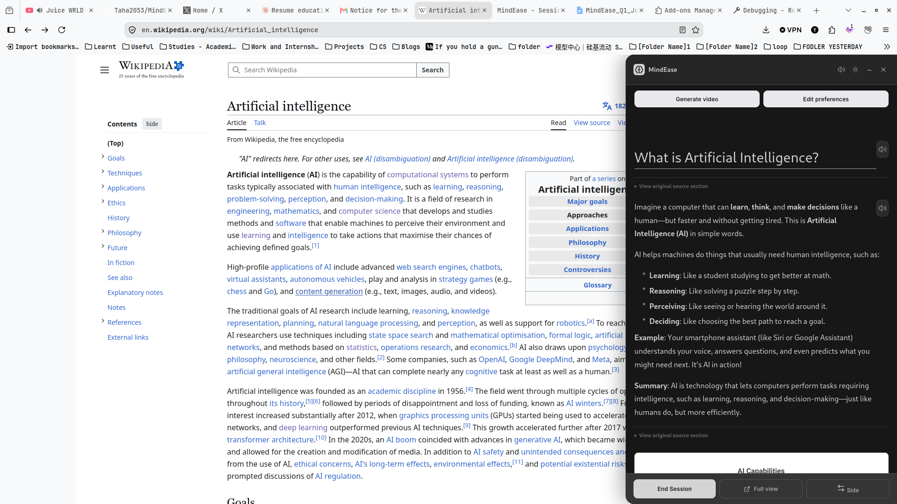
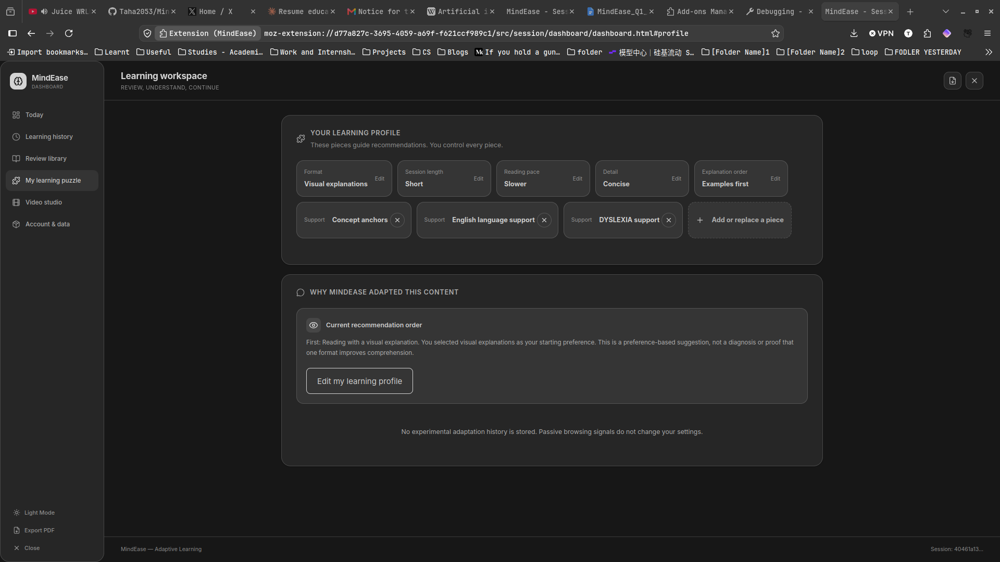
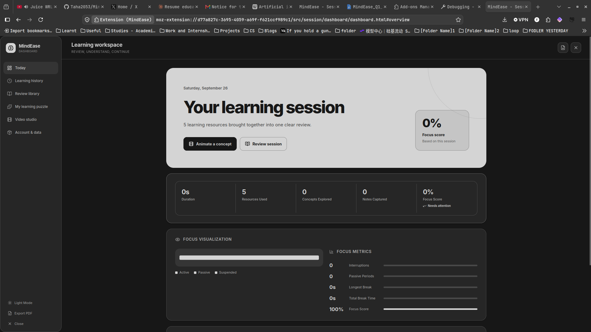
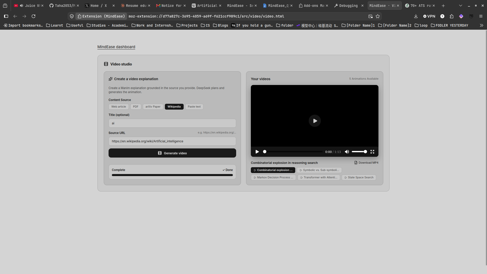
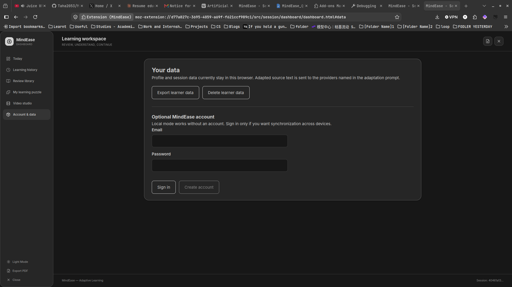
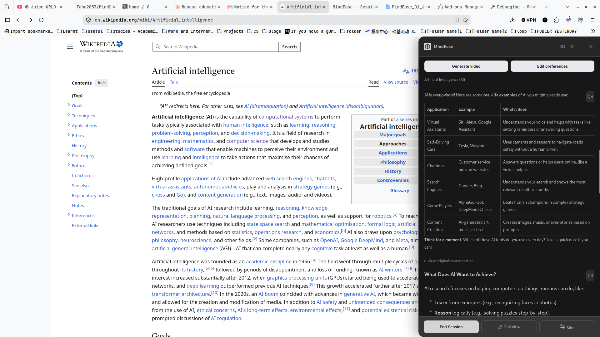

GCD4F 2026 Poster Companion
The Architects • ENSIT
UN SDG 4.5 Aligned
The AI Learning Layer That Adapts To Every Brain.
Educational content is built for one type of brain. MindEase is an AI-native browser extension that non-destructively transforms academic articles, complex STEM formulas, and educational video lectures in real time to match each student’s unique cognitive style — synthesising sessions into personalized memory artifacts.
3 Layers
Transform, Profile & Synthesize
0% Destructive
Preserves verbatim source text
81 States
Passive cognitive Q-learning agent
66 / 66
Hermetic unit tests passing
MindEase Shadow DOM In-Situ Overlay
Live Demonstration
[CONCEPT: Combinatorial Explosion]
[DEF: Heuristic]
[FORMULA: b^d]
Semantic Chunk 1: In state-space search, each additional decision step multiplies the branching factor Big O of b to the power of d: , rapidly exhausting working memory.
MindEase Real-Time Intervention: Deconstructed into a visual search tree with hoverable heuristic definitions and step-paced audio pacing.
The Friction
The One-Size-Fits-All Crisis in Academic Learning
Current digital educational environments assume a neurotypical reader with uniform cognitive stamina. For neurodivergent learners—specifically students diagnosed with ADHD, dyslexia, autism, and multilingual students—dense educational materials induce severe perceptual and cognitive breakdown.
Why Generic Accessibility Fails: Traditional Tools vs. MindEase
| Dimension | Traditional Tools (Screen Readers, Immersive Reader) | MindEase Cognitive Layer |
|---|---|---|
| Source Text Preservation | Destructive: re-writes or replaces original prose with automated generic summaries, stripping nuance. | 100% Non-Destructive: Verbatim source text retained in memory; accessible via instant one-key inspection toggle. |
| Personalization Model | Static: One universal rule set applied identically to every single user. | Individualized Cognitive Profile: 8-dimension preference puzzle + 81-state Q-learning policy adapted to your brain. |
| Mathematical Formulas | Reads formulas as flat alphanumeric strings or ignores raw LaTeX entirely. | KaTeX + Grounded Manim: Formatted math with semantic audio descriptions and visual video derivations. |
| Post-Study Synthesis | None. When you close the tab, the learning context and cognitive trail are completely lost. | 7-Section Knowledge Artifact: Identifies ungrasped gaps, builds Anki flashcards, and maps cross-source concepts. |
System Design
The Three-Layer Cognitive Architecture
MindEase operates across five browser entrypoints coordinating through strongly-typed messaging. The system decouples presentation transformation, behavioral modeling, and session memory into three distinct, robust layers.
Layer 1
Real-Time Content Transformation
Intercepts academic pages, PDFs, and videos. The backend DeepSeek planner and Mistral generator tag paragraphs into semantic blocks without destroying source text.
- Semantic Tagging:
[CHUNK],[CONCEPT],[DEF],[FORMULA]. - Shadow DOM Isolation: Encapsulated inside an open Shadow Root with
all: initialto prevent host CSS collisions. - Multimodal Generation: KaTeX equations, Napkin AI vector diagrams, and Manim mathematical animations.
- Dual-Modality Narration: Client-side sentence chunking with real-time visual karaoke highlighting.
Layer 2
Adaptive Cognitive Profiling (RL Agent)
Models learner processing characteristics across 81 discrete behavioral states ($3^4$ combinations of Highlight, Pause, Re-read, and Skip rates) and 9 action spaces.
- The Learning Puzzle: 8-dimension onboarding questionnaire (Visual/Text, Density, Pacing, Support Needs).
- Strict User Agency: Manual user overrides always supersede model recommendations.
- Zero Mid-Session Disruption: Telemetry is logged passively; adaptation parameters never jarringly mutate mid-paragraph.
- Q-Learning Reward: Updates post-session based on cumulative engagement: $R = 2.0 \cdot \text{engaged} - 1.5 \cdot \text{skip} + 0.5 \cdot \text{highlight}$.
Layer 3
Session Memory & Synthesis
Closes the learning loop by transforming passive web browsing into an active, reviewable knowledge base and structured study cards.
- Multi-Tab Workspace: Tracks active vs. passive focus across multiple research papers and Wikipedia tabs.
- Knowledge Gap Severity Ranking: Categorizes rushed or skipped concepts into Critical, Moderate, or Minor gaps.
- 7-Section Knowledge Artifact: Synthesizes visited resources, key definitions, cross-source links, and Anki-ready flashcards.
- Privacy & Data Sovereignty: Local-first IndexedDB storage with optional encrypted Supabase cloud synchronization.
Interactive Experience
Experience MindEase: Live Adaptation Simulator
Toggle between the unadapted, dense academic format and MindEase’s real-time cognitive transformation. Experiment with different learner profiles to see how the layout reshapes itself to protect working memory.
Interactive simulator showing an academic paragraph on Artificial Intelligence and State Space Search. You can toggle between Standard Raw Academic View and MindEase Transformed View, and switch between ADHD, Dyslexia, and Multilingual learner presets.
Chunk 1: The Core Dilemma
[CONCEPT: Combinatorial Explosion]
In AI, exploring solutions means searching through a network of possible configurations called a .
If an algorithm searches every branch blindly, the computational workload multiplies exponentially:
Mathematical Formula: Big-O notation of b raised to the power of d, where b represents the branching factor of the search tree and d represents the search depth to the goal.
Where $b$ = choices per step (branching factor), $d$ = steps to reach the goal (depth).
Key Takeaway
Without a guide, even simple problems generate billions of dead-ends faster than any computer can evaluate.
Chunk 2: The Solution
[CONCEPT: Heuristic Guidance]
To prevent exponential overload, AI uses an intelligent shortcut called a .
Instead of checking every move, the heuristic ranks which paths look most promising, pruning away dead ends.
Napkin AI Generated Concept Diagram
Text Alternative for Tree Diagram: From the Start root node, three branches diverge. The left and right paths fail admissibility and are pruned. The center path evaluates to h(n)=2 and proceeds directly to Goal State.
Prototype Tour
MindEase in Action: Interface & Workflow Tour
Directly from the running prototype. Explore how the browser extension integrates into real-world reading sessions, empowers learner agency, and synthesizes study history. Click any screenshot to enlarge.
Gallery of screenshots showing MindEase in use: Wikipedia In-situ adaptation with sidebar, The Learning Puzzle profile customizer, Session Dashboard metrics and focus visualization, Video Studio Manim generator, and Data Sovereignty privacy controls.

Visual Description
1. Real-Time In-Situ Reading Companion
Operating directly on Wikipedia’s Artificial Intelligence article. MindEase injects an isolated Shadow DOM sidebar that extracts key concepts, renders definitions, and provides step-by-step reading guidance without modifying host layout.
Detailed Technical Visual Breakdown
The screenshot captures a Firefox browser window showing Wikipedia’s Artificial Intelligence entry. On the right side, the MindEase companion panel floats cleanly, displaying a title “What is Artificial Intelligence?”, highlighted interactive definitions, real-life examples of AI, and simplified explanation blocks that break down the dense opening paragraph into digestible cognitive units.

Visual Description
2. "My Learning Puzzle" Profile
Learner autonomy at the center. Rather than clinical labels, students arrange puzzle pieces: Visual vs Text, Session Length, Reading Pace, Level of Detail, and active accommodations like Dyslexia Support and Concept Anchors.
Detailed Technical Visual Breakdown
The screenshot displays the MindEase Learning Profile workspace. At the top, six interactive puzzle piece controls are active: Format (Visual explanations), Session length (Short), Reading pace (Slower), Detail (Concise), Explanation order (Examples first). Active support tags include “Concept anchors”, “English language support”, and “DYSLEXIA support”. Below, a transparent explanation states: “Why MindEase adapted this content: preference-based suggestion, not a diagnosis or proof that one format improves comprehension.”

Visual Description
3. Post-Session Review & Knowledge Gaps
Post-session dashboard showing the comprehensive 7-section Knowledge Artifact. Displays active session duration, resource tabs processed, concept connection maps, and heuristically flagged knowledge gaps for review.
Detailed Technical Visual Breakdown
The screenshot shows the MindEase Dashboard with top navigation tabs: Today, Learning history, Review library, My learning puzzle, Video studio, and Account & data. Under “Your learning session”, key metrics report Duration, Resources Used, Concepts Explored, Notes Captured, and Focus Score. A dedicated “Focus Visualization” timeline illustrates engaged versus passive reading intervals.

Visual Description
4. Grounded Manim Video Studio
Turns dense theoretical papers into crisp, mathematically grounded animations. DeepSeek plans the visual narrative, Manim renders Python mathematical formulas into video, and Azure speech generates synchronized audio narration.
Detailed Technical Visual Breakdown
The screenshot captures the Video Studio route. It lists generated video explanations ready for playback and MP4 download, including “Combinatorial explosion in reasoning search”, “Symbolic vs. Sub-symbolic”, “Markov Decision Process”, “Transformer with Attention”, and “State Space Search”. Each card shows completion status, thumbnail preview, and direct download links.

Visual Description
5. Data Sovereignty & Local-First Storage
Student privacy is non-negotiable. MindEase functions completely in local mode without an account. Profiles and session archives reside in browser IndexedDB, with complete export and instant deletion controls.
Detailed Technical Visual Breakdown
The screenshot presents the Account & Data settings. Prominent text assures the learner: “Profile and session data currently stay in this browser. Local mode works without an account. Sign in only if you want synchronization across devices.” Action buttons allow learners to “Export learner data” as JSON or “Delete learner data” completely with a single click.

Visual Description
6. Contextual Concept Anchors & Tables
Abstract concepts are grounded with concrete, real-life tables and examples. As the learner scrolls the source article, the companion dynamically highlights matching concepts and presents structured reference cards.
Detailed Technical Visual Breakdown
The screenshot shows Wikipedia text alongside a MindEase card titled “Real-life examples of AI”. It includes a two-column table mapping common tools (like Google Search, Face ID, and Voice Assistants) to their underlying AI concepts, helping learners anchor abstract computer science definitions to tangible experiences.
Grounded Media Studio
MindEase Video Studio: Spoken & Animated Demos
All videos feature voice narration, closed captions, and complete text transcripts. Select a topic below to watch how MindEase translates complex computer science mathematics into intuitive visual explanations.
Video demonstration player containing six playable educational animations generated by MindEase, with audio voiceover, closed captions, and synchronized text transcripts.
View Full Accessible Video Transcript & Formula Breakdown Captions & Text
[00:00 - 00:20]
Narrator: "When an AI explores possible choices, every decision branches into multiple next steps. In game playing, puzzle solving, and theorem proving, this branching creates a rapidly expanding tree of possibilities."
[00:20 - 00:45]
Narrator: "Mathematically, the total number of states visited scales exponentially as $b$ raised to the power of $d$, written as $\mathcal{O}(b^d)$. Even with a modest branching factor of 3 and a depth of 20, the search space reaches over three billion distinct possibilities."
[00:45 - 01:13]
Narrator: "This is known as the combinatorial explosion. To overcome this limitation, search algorithms employ heuristic evaluations to discard unpromising trajectories, reducing exponential search complexity to a tractable, focused path toward the goal."
Audit & Research
Evidence-Led Engineering & Research Audit
Grounding claims in source code reality. MindEase was audited on 26 September 2026. Every metric below is backed by running test suites, build outputs, and codebase verification.
Source Lines of Code
15,679 LOC
Under
src/ across 70 TypeScript and TSX files in strict mode.
Unit Test Suite
66 / 66 Pass
Hermetic Vitest tests across Layer 1, Layer 2, Layer 3, and LaTeX formatting.
Browser Targets
Dual MV3
Automated builds for Google Chrome (3.38 MB) and Mozilla Firefox (3.38 MB).
DOM Isolation
Shadow Root
Open Shadow DOM with
all: initial CSS reset blocks host page style leaks.
Scientific Integrity & Responsible Framing
In alignment with high academic standards, the MindEase team explicitly clarifies what the current prototype demonstrates:
- Preference-Led, Not Diagnostic: Onboarding accommodates learner-stated preferences (e.g. "I prefer visual explanations and shorter sections"). It does not attempt to diagnose psychological conditions or claim universal comprehension improvements.
- Active Ratio vs Attention: The displayed Focus Score in the dashboard represents the mathematical ratio of active dwell time to total session duration (filtering out idle periods >5 min). It is a passive activity proxy, not a direct neural measure of human attention or cognitive mastery.
- Strict Non-Destructive Invariance: Generated adapted lessons are always paired with the exact verbatim original source blocks, allowing the reader to inspect the author’s original wording at any moment.
Inclusive Design
Universal Access & Assistive Technology Reference
This website is crafted to exceed WCAG 2.2 Level AAA success criteria. Every interactive feature can be operated via keyboard, screen reader, or switch device.
Alt + A
Open / Close Accessibility Preferences Modal
Alt + R
Toggle Interactive Reading Ruler
Alt + T
Toggle Visible Image Alt Text & Descriptions
Alt + S
Play / Pause Spoken Audio Narrator
Esc
Dismiss Reading Ruler or Close Dialogs
Tab / Shift+Tab
Navigate forward / backward through focusable items
Space / Enter
Activate buttons, toggle checkboxes, or expand accordions